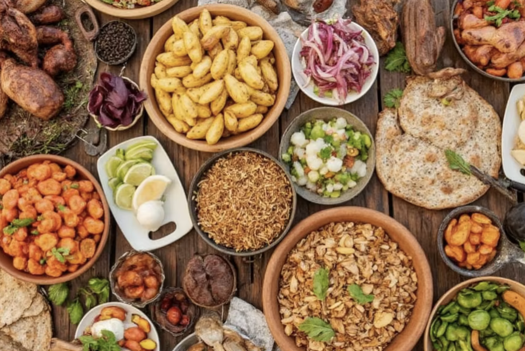
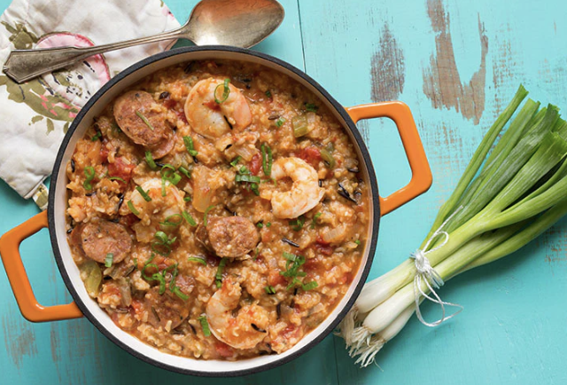
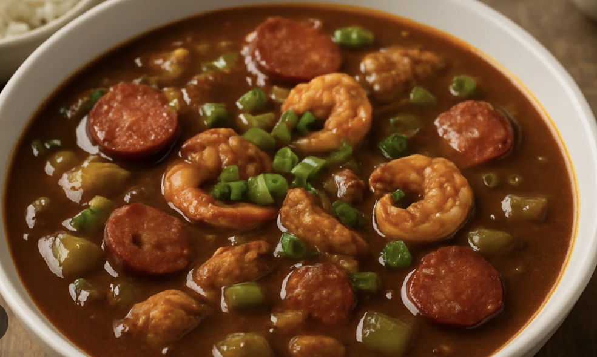
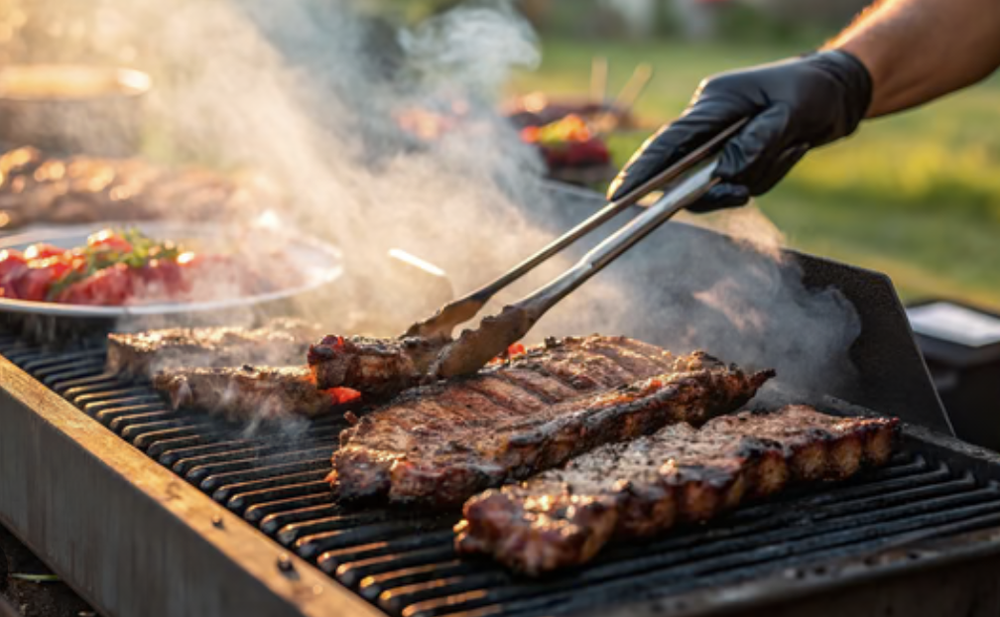

Roots & Recipies: Diverse Delights to Discover
Food traditions preserve memory, family connection, and a history of adaptation and care.
Return to HomeFood as Expression and Cultural Identity
People use food in so many different ways, such as expression, art, cultural identity, values, and even emotion. As a society, especially in America and in countries across the world, we consume many different foods influenced by African and African-American foodways. Foods such as fried chicken, red beans and rice, coffee, and more connect to traditions rooted in different African countries. In this section, we cover food traditions in African communities and their lasting global impact.

How Dishes Spread Across the World
Infamous dishes and foods like jambalaya (Creole/Cajun rice dish), barbecue, gumbo, red rice, and sweet potato dishes all connect to African roots. Many food traditions spread to different parts of the world partly through the transatlantic slave trade. During this period, not only people were transported, but also plants, animals, and unique planting and cooking techniques.
Over hundreds of years, inherited and regional recipes were preserved in memory and passed down from generation to generation. These dishes remain powerful examples of cultural resilience.

Common Foods Seen in America
African and African-American foods commonly eaten in America, especially around Thanksgiving, include:
- Collard greens (leafy green vegetables)
- Jollof rice (rice in tomato and pepper-based sauce with onions, spices, and meat or fish)
- Okra stew (okra simmered in sauce, often tomato-based, with vegetables, herbs, and spices)
- Sweet potato pie
Next time you eat Thanksgiving dinner or one of your favorite meals, think about what you are eating and where it truly originated from. Remember to always expand your food palate, and always be curious of the rich culture all around you!
Food Photo Gallery
Hover over each image to see a short description:



